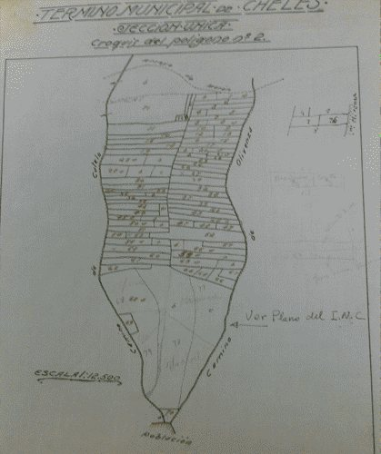

Su finca, bien en el Catastro.
Gabinete catastral para particulares, despachos y notarías: GML, correcciones de superficie y linderos, declaraciones, valor de referencia y coordinación con el Registro. Y un gabinete externo para ayuntamientos.

¿Qué le pasa a su finca?
Busque su caso. Con la referencia catastral le decimos qué camino tiene y qué hace falta.
La superficie no coincide
Medimos la finca y pedimos la corrección al Catastro con las pruebas, o la llevamos al Registro con su GML.
El lindero está mal dibujado
Preparamos la representación gráfica con las coordenadas reales y la validamos en el Catastro.
Quiero inscribir la forma real
GML con informe de validación gráfica positivo, listo para la notaría y el Registro.
Lo construido no es lo que figura
Una obra nueva que no aparece o una casa que ya no existe: se declara al Catastro, en los dos meses siguientes al cambio.
Me liquidan por el valor de referencia
Si al heredar o comprar se aplica un valor superior al real, preparamos el informe técnico para recurrir.
Mi valor catastral no cuadra
Revisamos superficie, uso, antigüedad y calidad. Si hay un error, pedimos la corrección; si no, le decimos qué recurso cabe.
Voy a comprar, vender o heredar
Comprobamos antes de firmar que el Catastro, el Registro y el terreno dicen lo mismo.
Quiero segregar o agrupar
Plano, licencia y GML. Lo explicamos en segregaciones y particiones.
El GML, explicado.
Es un archivo con las coordenadas de los linderos de su finca, en el formato que leen el Catastro y el Registro. Es la forma de decir dónde está exactamente.
- Para qué sirve: corregir linderos y superficie, segregar, agrupar o dividir, e inscribir en el Registro la forma real de la finca.
- Informe de validación gráfica: el Catastro comprueba que el GML encaja con las parcelas vecinas. Si sale positivo, la notaría y el Registro pueden usarlo.
- Los vecinos: si el cambio les afecta, el Registro se lo notifica y pueden oponerse. Por eso la finca tiene que estar bien medida desde el principio.
- MedirEn el terreno, con GNSS o con dron.
- DibujarEl GML, con coordenadas oficiales.
- ValidarInforme de validación gráfica del Catastro.
- InscribirNotaría y Registro.
- CoordinarCatastro y Registro dicen lo mismo.
Correcciones: tres caminos.
Declaración
Cuando el cambio es suyo (una obra, una segregación, un cambio de cultivo): se declara al Catastro en el plazo de dos meses.
Subsanación de discrepancias
Cuando el Catastro tiene un dato que no coincide con la realidad: se le comunica con pruebas. Hay 15 días de audiencia y la resolución llega en un máximo de seis meses.
Recurso
Cuando el error está en algo ya notificado, como un valor o una alteración: recurso de reposición o reclamación económico-administrativa, en el plazo de un mes.
Valor de referencia.
Desde 2022, al comprar una vivienda usada, heredar o recibir una donación, el impuesto se calcula como mínimo sobre el valor de referencia del Catastro.
- Solo se puede discutir por dos caminos: pidiendo la rectificación de la autoliquidación o recurriendo la liquidación de Hacienda.
- Es una presunción que admite prueba en contrario: el estado real del inmueble, sus defectos o su superficie útil.
- Preparamos el informe técnico que lo demuestra, con medición, fotografías y comparables. Con plazo: no lo deje pasar.
Ayuntamientos: un gabinete externo que trabaja como uno propio.
Apoyo técnico estable para el ayuntamiento o el organismo que lleva la gestión catastral.
- Alteraciones: obra nueva, reformas, segregaciones, cambios de cultivo.
- Comunicaciones al Catastro a partir de las licencias municipales.
- Atención al vecino en valor catastral, titularidad e IBI.
- Recursos: informes técnicos para resolverlos.
- Alertas de teledetección convertidas en expedientes.
- DetectarTeledetección o licencia.
- ComprobarImagen, campo y foto.
- TramitarExpediente documentado.
- IncorporarEl Catastro lo recoge.
- LiquidarLlega al padrón del IBI.
Lo que más nos preguntan.
¿Qué es un GML y por qué me lo pide la notaría?
Es el archivo con las coordenadas de su finca. La notaría o el Registro lo piden para inscribir su forma real o una segregación. Se lo preparamos con el informe de validación del Catastro.
La superficie del Catastro y la del Registro no coinciden.
Medimos la finca, preparamos la representación gráfica y la llevamos al Catastro y, si quiere, al Registro.
Tengo una construcción que no aparece en el Catastro.
Declararla es obligatorio, y hacerlo por iniciativa propia siempre es mejor que esperar a un requerimiento. Le preparamos la declaración.
Hacienda me pide más impuesto por el valor de referencia.
Si el inmueble vale menos por su estado o sus características, se puede discutir con un informe técnico. Hay plazos, así que conviene moverse pronto.
No estoy de acuerdo con mi valor catastral.
Revisamos superficie, uso, antigüedad y calidad. Si hay un error, pedimos su corrección; si no, le decimos qué recurso cabe y su plazo.
Somos un ayuntamiento pequeño, sin técnico de catastro.
Es el caso para un gabinete externo: atención a vecinos, alteraciones y un cruce periódico de licencias, Catastro e IBI.
Cuéntenos su caso.
Con la referencia catastral le decimos si tiene arreglo, qué camino tiene y cuánto cuesta.
- emiliocontadorbrito@gmail.com
- Calle Matilde Tagle Ortiz, 28, 5.º D, 06006 Badajoz